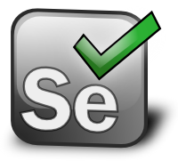

Por: Jozimar Soares
às: 21:37
26/09/2016
Integração Contínua
Selenium
O Selenium é um conjunto de ferramentas que permite criar várias ações repetidas em páginas web, formando assim uma automação de browsers. Ele ainda possibilita executar essa automação em várias plataformas diferentes. Para a criação de projetos usa-se geralmente o Selenium IDE que não é nada mais, nada menos que um plug-in utilizado no Firefox que possibilita a gravação e execução de testes e ainda permite a edição e o debug dos testes criados.
Algumas das Principais funcionalidades do Selenium são: A fácil gravação, alteração e execução dos scripts de teste, o auto completar de comandos, os debugs e os breakpoints, salvar testes em HTML que é o formato padrão do Selenium IDE, ou também nas linguagens que ele suporta e a customização por plug-ins.
O Selenium IDE também suporta uma série de plug-ins que aumentam o poder da gravação e execução. Entre os plug-ins mais utilizados estão: O Screenshot on Fail que captura automaticamente uma screenshot no momento que um comando falha, o Implict Wait que espera automaticamente por um elemento que ainda não esteja presente. O Stored Variables Viewer que permite a visualização de variáveis durante e após a execução de um script, o Flow Control que permite a criação de quebra de fluxo (goto) e loops no script e por fim o Selenium Remote Control que é um cliente/servidor onde possui o controle de um browser local ou até mesmo em outro computador utilizando scripts do Selenium IDE em HTML, ou scripts criados em diferentes linguagens de programação.
Também é possível gerar código para outras linguagens de programação, onde as mesmas são suportadas através de um driver no Selenium Remote Control. Você tem total liberdade para desenvolver um gerador de código para qualquer linguagem que faça chamadas HTTP, ou seja, tanto o Selenium, como também a sua IDE são ferramentas muito úteis para o desenvolvimento do seu projeto e possibilitam uma série de opções para mantê-lo bem estruturado e organizado e ainda agiliza o processo do seu desenvolvimento.